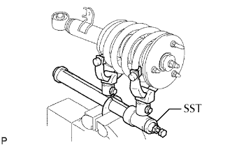
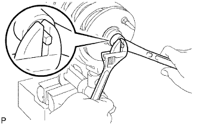

BỘ GIẢM CHẤN TRƯỚC VỚI LÒ XO TRỤ > THÁO RỜI |
| 1. THÁO ĐAI ỐC GIÁ ĐỠ PHÍA TRƯỚC VÀ GIẢM CHẤN TRƯỚC |
|  |
Dùng SST, nén lò xo trụ.
|  |
Giữ píttông bộ giảm chấn và tháo đai ốc.
| 2. THÁO HÃM VÒNG ĐỆM BỘ GIẢM CHẤN TRƯỚC |
Tháo 2 hãm vòng đệm ra khỏi bộ giảm chấn.
| 3. THÁO VÒNG ĐỆM BỘ GIẢM CHẤN TRƯỚC |
Tháo đệm ra khỏi bộ giảm chấn.
| 4. THÁO THANH ĐỠ HỆ THỐNG TREO TRƯỚC |
Tháo đỡ hệ thống treo ra khỏi lò xo trụ.
| 5. THÁO CAO SU PHÍA TRÊN LÒ XO TRỤ TRƯỚC TRÁI |
Tháo cao su phía trên ra khỏi lò xo trụ.
| 6. THÁO LÒ XO TRỤ TRƯỚC TRÁI |
Tháo lò xo trụ ra khỏi bộ giảm chấn.